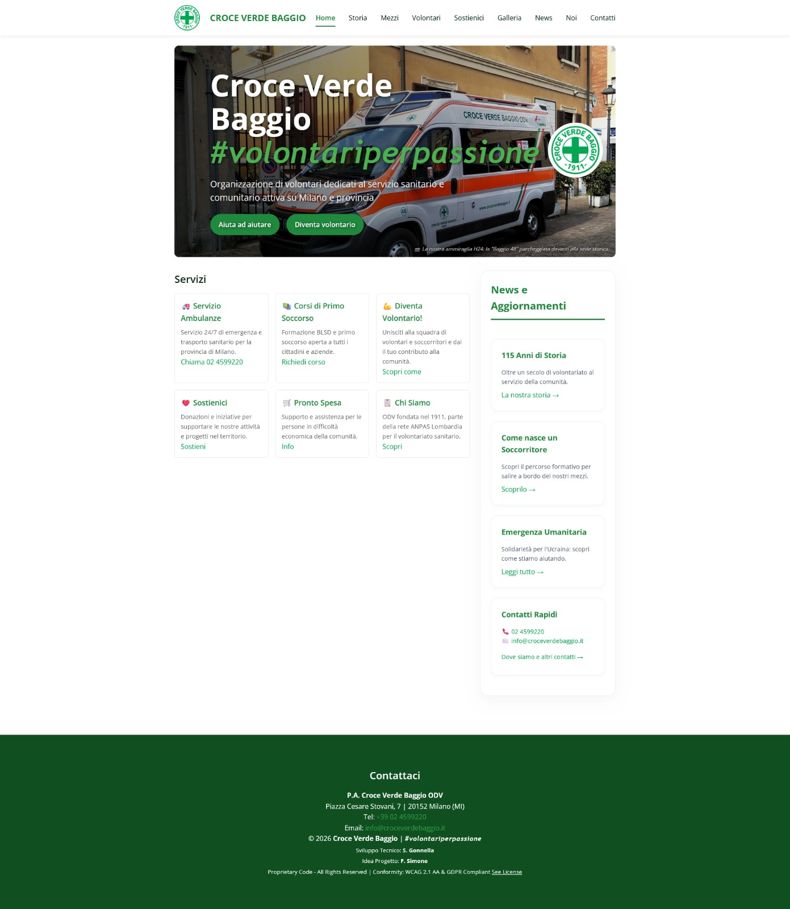

Some projects I Worked on
Web Portal - Croce Verde Baggio
Institutional web portal for the local EMS Station, P.A. Croce Verde Baggio ODV. I started from a monolithic HTML file and I fully redesigned, improved and converted it into a dynamic, PHP-based, fully responsive, WCAG 2.1 AA and W3C compliant custom website with admin pages and backend, no-code maintenance custom CSS styling and responsive tiling.
Institutional web portal for the local EMS Station, P.A. Croce Verde Baggio ODV. Fully redesigned and converted to dynamic PHP.
Tap to read more →
Volunteer Diary - Croce Verde Baggio
Advanced On-Scene Time Calculator and tracker. I started by building a modern, Material 3-inspired Time Calculator in Kotlin to solve a real problem: the need of knowing exactly how much time I spend on-scene on an ambulance call, in order to keep track with the minimum time required to pass the regional exam while remaining focused on the scene and on the patient. I then started adding features like note taking, digital signature, real time counter, service history and theming.
Advanced On-Scene Time Calculator and tracker app in Kotlin and Material 3 for ambulance volunteers.
Tap to read more →Snake Game - ITS TTF
A clone of the famous 1980s game Snake, born as an exercise during Tech Writing course at ITS Tech Talent Factory. It was meant to show us how the Software Development Cycle of something simple like a small Snake game implies many hours of careful teamwork and attention to every detail, by teaching us the importance of Docs-As-Code and deployment manuals.
A clone of the classic 1980s Snake game, developed as an exercise in software life cycle and Docs-As-Code.
Tap to read more →
Windows Cleaner - personal
A tool designed to un-bloat Windows 10/11. It started from two scripts: one for debloating and one for ordinary maintenance. It then evolved in a fully featured Windows Maintenance App. It empties the Trash Bin, removes temporary files, removes Windows.old folders and undesired spyware from your computer. It can be programmed to run automatically or can be used to do ordinary maintenance on your hardware.
A customized utility designed to debloat and optimize Windows 10 and 11 environments.
Tap to read more →